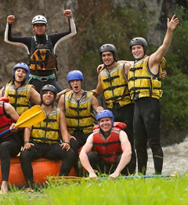

Founded in 2005 by whitewater aficionados Alex Martinez and Jamie Chen,
Riversong Rafting Adventures sprang from a simple dream: to share the thrill
of the rapids with others while upholding the utmost respect for nature.
Starting with just a few rafts, they quickly established a reputation for safety,
environmental stewardship, and unforgettable experiences.
Over the years, Riversong expanded its offerings,

to all levels of adventurers and solidifying its status as a leader in sustainable rafting. The company's dedication to the environment is evident through its River Conservation Initiative,
which supports local preservation efforts.
Today, Riversong stands as a testament to a passion for adventure and a commitment to the rivers we call home,
offering diverse rafting experiences and continuing to inspire a community of enthusiasts and conservationists.